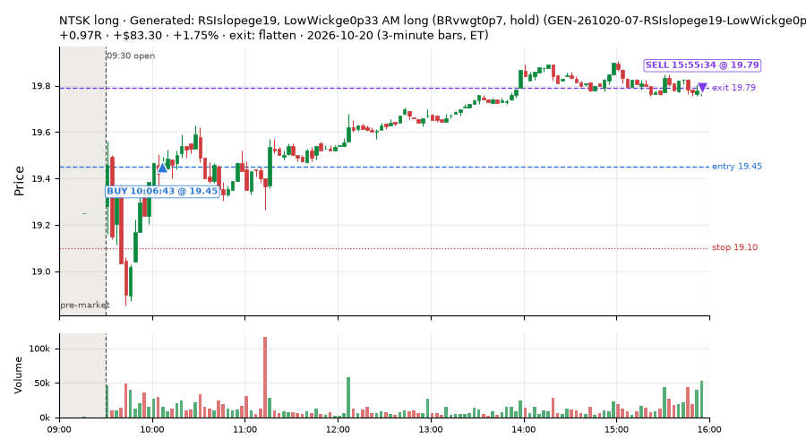
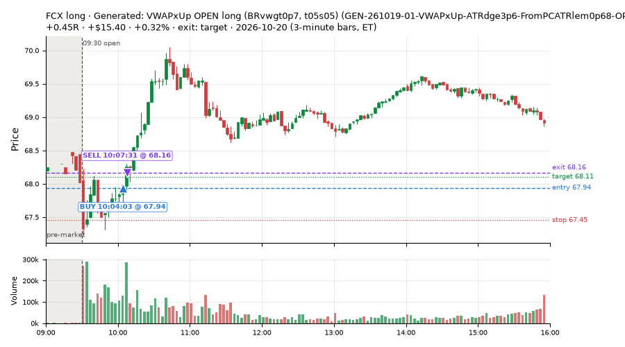
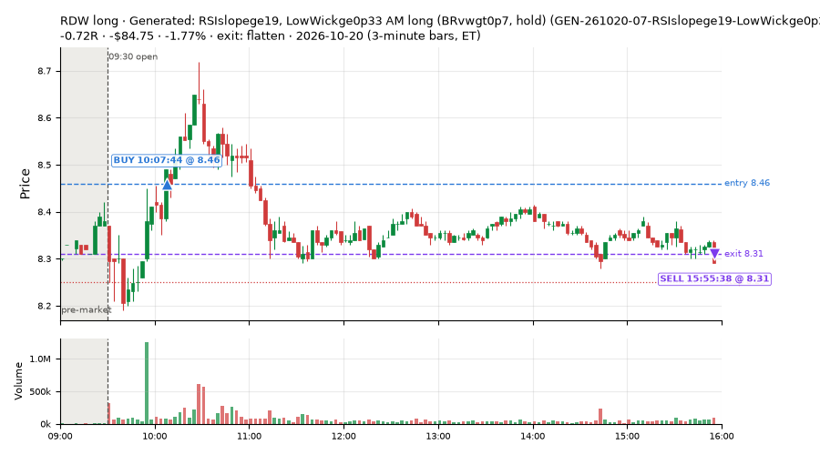
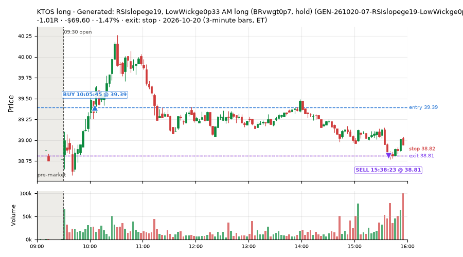
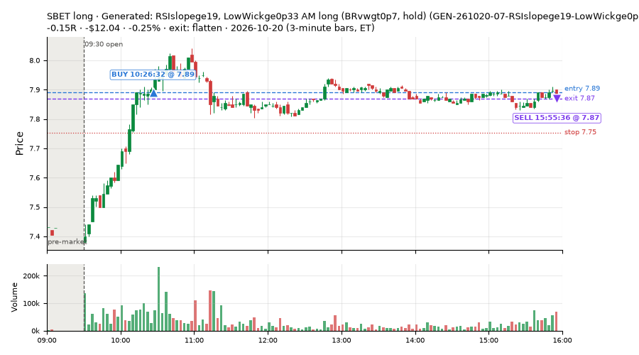
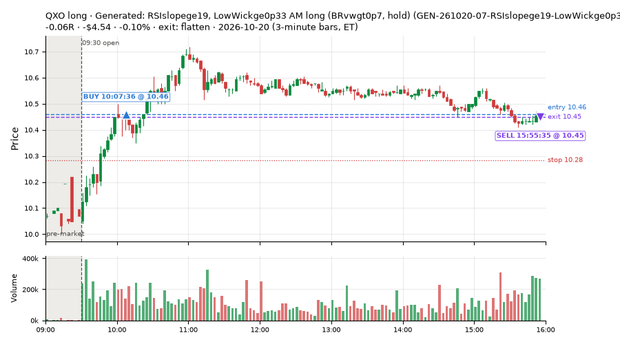

6 trades · win rate 33% · P/L $-72.23
PROBATION: no live setup has passed both locked test periods. 10 owner-directed setups added 2026-10-08 (MarcoFlow top 5 + 5 new), untested live. RW6G1 (RW6 + VWAP band guard) added 2026-10-09, probation.

| Symbol | Setup | Side | In | Out | Entry | Exit | Exit reason | % gained | P/L |
|---|---|---|---|---|---|---|---|---|---|
| NTSK | Generated: RSIslopege19, LowWickge0p33 AM long (BRvwgt0p7, hold) (GEN-261020-07-RSIslopege19-LowWickge0p33-ATRdge4p4-AM-BRvwgt0p7-hold-long) | long | 10:06 | 15:55 | 19.45 | 19.79 | flatten | +1.75% | $83.30 |
| FCX | Generated: VWAPxUp OPEN long (BRvwgt0p7, t05s05) (GEN-261019-01-VWAPxUp-ATRdge3p6-FromPCATRlem0p68-OPEN-BRvwgt0p7-t05s05-long) | long | 10:04 | 10:07 | 67.94 | 68.16 | target | +0.32% | $15.40 |
| Symbol | Setup | Side | In | Out | Entry | Exit | Exit reason | % lost | P/L |
|---|---|---|---|---|---|---|---|---|---|
| RDW | GEN-261020-07-RSIslopege19-LowWickge0p33-ATRdge4p4-AM-BRvwgt0p7-hold-long | long | 10:07 | 15:55 | 8.46 | 8.31 | flatten | -1.77% | $-84.75 |
| KTOS | GEN-261020-07-RSIslopege19-LowWickge0p33-ATRdge4p4-AM-BRvwgt0p7-hold-long | long | 10:05 | 15:38 | 39.39 | 38.81 | stop | -1.47% | $-69.60 |
| SBET | GEN-261020-07-RSIslopege19-LowWickge0p33-ATRdge4p4-AM-BRvwgt0p7-hold-long | long | 10:26 | 15:55 | 7.89 | 7.87 | flatten | -0.25% | $-12.04 |
| QXO | GEN-261020-07-RSIslopege19-LowWickge0p33-ATRdge4p4-AM-BRvwgt0p7-hold-long | long | 10:07 | 15:55 | 10.46 | 10.45 | flatten | -0.10% | $-4.54 |






Signal to fill: median 1s, 90th percentile 3s (6 trades). Bars close each minute; the order follows the bar close.
Best excursion (MFE): median 1.27R; worst (MAE) median 0.62R. 0% of trades never got +0.25R in our favour; 4 reached +1R and still closed at or below 0.
| Symbol | Setup | Best R | Worst R | Closed R |
|---|---|---|---|---|
| KTOS | GEN-261020-07-RSIslopege19-LowWickge0p33-ATRdge4p4-AM-BRvwgt0p7-hold-long | +1.51 | -0.99 | -1.01 |
| RDW | GEN-261020-07-RSIslopege19-LowWickge0p33-ATRdge4p4-AM-BRvwgt0p7-hold-long | +1.23 | -0.86 | -0.72 |
| QXO | GEN-261020-07-RSIslopege19-LowWickge0p33-ATRdge4p4-AM-BRvwgt0p7-hold-long | +1.46 | -0.62 | -0.06 |
| SBET | GEN-261020-07-RSIslopege19-LowWickge0p33-ATRdge4p4-AM-BRvwgt0p7-hold-long | +1.10 | -0.62 | -0.15 |
| NTSK | GEN-261020-07-RSIslopege19-LowWickge0p33-ATRdge4p4-AM-BRvwgt0p7-hold-long | +1.30 | -0.53 | +0.97 |
| Entry time | Trades | Win | Avg R | P/L |
|---|---|---|---|---|
| 09:50-10:30 | 6 | 33% | -0.08 | $-72.23 |
| Setup | Trades | Win | Avg R | Adj R (net of SPY) | P/L |
|---|---|---|---|---|---|
| Generated: VWAPxUp OPEN long (BRvwgt0p7, t05s05) (GEN-261019-01-VWAPxUp-ATRdge3p6-FromPCATRlem0p68-OPEN-BRvwgt0p7-t05s05-long) | 1.0 | 100% | +0.45 | +0.31 | $15.40 |
| Generated: RSIslopege19, LowWickge0p33 AM long (BRvwgt0p7, hold) (GEN-261020-07-RSIslopege19-LowWickge0p33-ATRdge4p4-AM-BRvwgt0p7-hold-long) | 5.0 | 20% | -0.19 | -0.16 | $-87.63 |
Market direction (SPY, beta 1) accounted for $-12.66 of today's $-72.23; the rest ($-59.57) came from the setups themselves. Avg R net of SPY: -0.09 (incl. a hedge leg's cost; report only).
20 setups live today. Today: 10 signals, 6 taken, 0 lost because another setup held the symbol (0%). Since 2026-10-19 (2 sessions): 17 signals, 12 taken, 0 lost to other setups (0%). Peak open positions today 5 of 80 slots. Earnings blackout removed 412 symbols before scanning.
Simulated playing time (not live): 5 what-if trades of signals not taken, avg +0.25R, 60% winners; of them 0 lost to another setup.
| Prio | Setup | Today sig / taken | Sessions | Signals / taken / trades | Taken/day | Expected/day | Lost to other setups | Lost to (setup n) | Top skip reasons | SIMULATED: not-taken n / avg R / win | Verdict |
|---|---|---|---|---|---|---|---|---|---|---|---|
| 1 | Generated: FlowShiftlem0p41 OPEN long (QQQup, t05s05) GEN-261020-08-FlowShiftlem0p41-Compress6le0p077-OPEN-QQQup-t05s05-long | 0 / 0 | 1 | 0 / 0 / 0 | 0.00 | – | 0 | – | – | 0 / – | quiet - wait no signals in 1 session(s); too early to tell |
| 2 | Generated: VWAPxDn MID long (BRoplt0p5, holdtr) GEN-261020-06-VWAPxDn-Slope6lem0p011-BarsSinceHODge35-MID-BRoplt0p5-holdtr-long | 0 / 0 | 1 | 0 / 0 / 0 | 0.00 | – | 0 | – | – | 0 / – | quiet - wait no signals in 1 session(s); too early to tell |
| 3 | Generated: BBpctle0p017 PM long (QQQdn, t05s1) GEN-261019-02-BBpctle0p017-SMA20slopege0p46-PM-QQQdn-t05s1-long | 0 / 0 | 2 | 0 / 0 / 0 | 0.00 | – | 0 | – | – | 0 / – | quiet - wait no signals in 2 session(s); too early to tell |
| 4 | Generated: MACDhge0p12, BullDiv MID short (SPYgt0p25, t05s1) GEN-261020-04-MACDhge0p12-BullDiv-MID-SPYgt0p25-t05s1-short | 0 / 0 | 1 | 0 / 0 / 0 | 0.00 | – | 0 | – | – | 0 / – | quiet - wait no signals in 1 session(s); too early to tell |
| 5 | Generated: EMAdChgge0p15 PM short (SPYltm0p5, t05s1) GEN-261019-09-EMAdChgge0p15-Since950ATRge0p6-PM-SPYltm0p5-t05s1-short | 0 / 0 | 2 | 0 / 0 / 0 | 0.00 | – | 0 | – | – | 0 / – | quiet - wait no signals in 2 session(s); too early to tell |
| 6 | Generated: NewHOD AM short (SPYdn, hold) GEN-261019-08-NewHOD-Slope6ge0p03-DayRngVsPrevge1p5-AM-SPYdn-hold-short | 0 / 0 | 2 | 0 / 0 / 0 | 0.00 | – | 0 | – | – | 0 / – | quiet - wait no signals in 2 session(s); too early to tell |
| 7 | Generated: VWAPxUp OPEN long (BRvwgt0p7, t05s05) GEN-261019-01-VWAPxUp-ATRdge3p6-FromPCATRlem0p68-OPEN-BRvwgt0p7-t05s05-long | 2 / 1 | 2 | 2 / 1 / 1 | 0.50 | – | 0 | – | spread / quote / size 1 | 1 / +0.91R / 100% | slow 2.5 entries/week; ~24 weeks to 60 trades |
| 8 | Generated: RSIslopelem19, BarRngATRge0p14 LATE short (BRvwgt0p7, t05s1) GEN-261020-02-RSIslopelem19-BarRngATRge0p14-BuyPressge0p17-LATE-BRvwgt0p7-t05s1-short | 0 / 0 | 1 | 0 / 0 / 0 | 0.00 | – | 0 | – | – | 0 / – | quiet - wait no signals in 1 session(s); too early to tell |
| 9 | Generated: MACDhge0p079 MID long (BRvwlt0p3, t05s05) GEN-261020-03-MACDhge0p079-BarsSinceLODle5-MID-BRvwlt0p3-t05s05-long | 0 / 0 | 1 | 0 / 0 / 0 | 0.00 | – | 0 | – | – | 0 / – | quiet - wait no signals in 1 session(s); too early to tell |
| 10 | Generated: MACDhge0p12, RSI5le25 PM long (BRvwgt0p6, t1s05) GEN-261020-01-MACDhge0p12-RSI5le25-PM-BRvwgt0p6-t1s05-long | 0 / 0 | 1 | 0 / 0 / 0 | 0.00 | – | 0 | – | – | 0 / – | quiet - wait no signals in 1 session(s); too early to tell |
| 11 | Generated: VolRatioge2, UpWickge0p59 LATE long (SPYgt0p5, t05s1) GEN-261019-07-VolRatioge2-UpWickge0p59-DayRngVsPrevge1p5-LATE-SPYgt0p5-t05s1-long | 0 / 0 | 2 | 0 / 0 / 0 | 0.00 | – | 0 | – | – | 0 / – | quiet - wait no signals in 2 session(s); too early to tell |
| 12 | Generated: VWAPxUp PM long (SPYgt0p5, holdtr) GEN-261019-06-VWAPxUp-EMAdiffge0p29-PM-SPYgt0p5-holdtr-long | 0 / 0 | 2 | 0 / 0 / 0 | 0.00 | – | 0 | – | – | 0 / – | quiet - wait no signals in 2 session(s); too early to tell |
| 13 | Generated: RSIslopelem9 OPEN long (SPYltm0p5, t1s1) GEN-261019-05-RSIslopelem9-PDLdistle0p14-EMAdifflem0p46-OPEN-SPYltm0p5-t1s1-long | 0 / 0 | 2 | 0 / 0 / 0 | 0.00 | – | 0 | – | – | 0 / – | quiet - wait no signals in 2 session(s); too early to tell |
| 14 | Generated: Ret15mATRlem0p12 PM long (BRoplt0p5, t05s1) GEN-261019-03-Ret15mATRlem0p12-FromOpenATRlem0p34-SMA20slopege0p29-PM-BRoplt0p5-t05s1-long | 0 / 0 | 2 | 3 / 2 / 2 | 1.00 | – | 0 | – | spread / quote / size 1 | 1 / +0.44R / 100% | slow 5.0 entries/week; ~12 weeks to 60 trades |
| 15 | Generated: EMAdChgge0p15 MID long (BRoplt0p5, t1s1) GEN-261019-04-EMAdChgge0p15-RSI14le22-MID-BRoplt0p5-t1s1-long | 0 / 0 | 2 | 0 / 0 / 0 | 0.00 | – | 0 | – | – | 0 / – | quiet - wait no signals in 2 session(s); too early to tell |
| 16 | Generated: BBpctge0p81, ORBfailDn AM short (BRvwlt0p3, hold) GEN-261020-10-BBpctge0p81-ORBfailDn-AM-BRvwlt0p3-hold-short | 0 / 0 | 1 | 0 / 0 / 0 | 0.00 | – | 0 | – | – | 0 / – | quiet - wait no signals in 1 session(s); too early to tell |
| 17 | Generated: EMAdChgge0p093, Z12lem0p82 MID long (QQQltm0p3, holdtr) GEN-261020-09-EMAdChgge0p093-Z12lem0p82-VWAPcrossesle0-MID-QQQltm0p3-holdtr-long | 0 / 0 | 1 | 0 / 0 / 0 | 0.00 | – | 0 | – | – | 0 / – | quiet - wait no signals in 1 session(s); too early to tell |
| 18 | Generated: RSIslopege19, LowWickge0p33 AM long (BRvwgt0p7, hold) GEN-261020-07-RSIslopege19-LowWickge0p33-ATRdge4p4-AM-BRvwgt0p7-hold-long | 7 / 5 | 1 | 7 / 5 / 5 | 5.00 | – | 0 | – | spread / quote / size 2 | 2 / -1.10R / 0% | ok 25.0 entries/week |
| 19 | Generated: ORBfailDn LUNCH long (SPYgt0p25, holdtr) GEN-261020-05-ORBfailDn-VWAPcrossesge4-SMA20dlem0p31-LUNCH-SPYgt0p25-holdtr-long | 1 / 0 | 1 | 1 / 0 / 0 | 0.00 | – | 0 | – | spread / quote / size 1 | 1 / +2.09R / 100% | slow no entries yet |
| 20 | Generated: FlowShiftge0p42 PM short (BRoplt0p5, t1s1) GEN-261019-10-FlowShiftge0p42-SMA50dge1p7-PM-BRoplt0p5-t1s1-short | 0 / 0 | 2 | 4 / 4 / 4 | 2.00 | – | 0 | – | – | 0 / – | slow 10.0 entries/week; ~6 weeks to 60 trades |
Every trade is attached as a CSV you can open and edit in Excel or Google Sheets. Live page: https://misiti15.github.io/MCF/live/